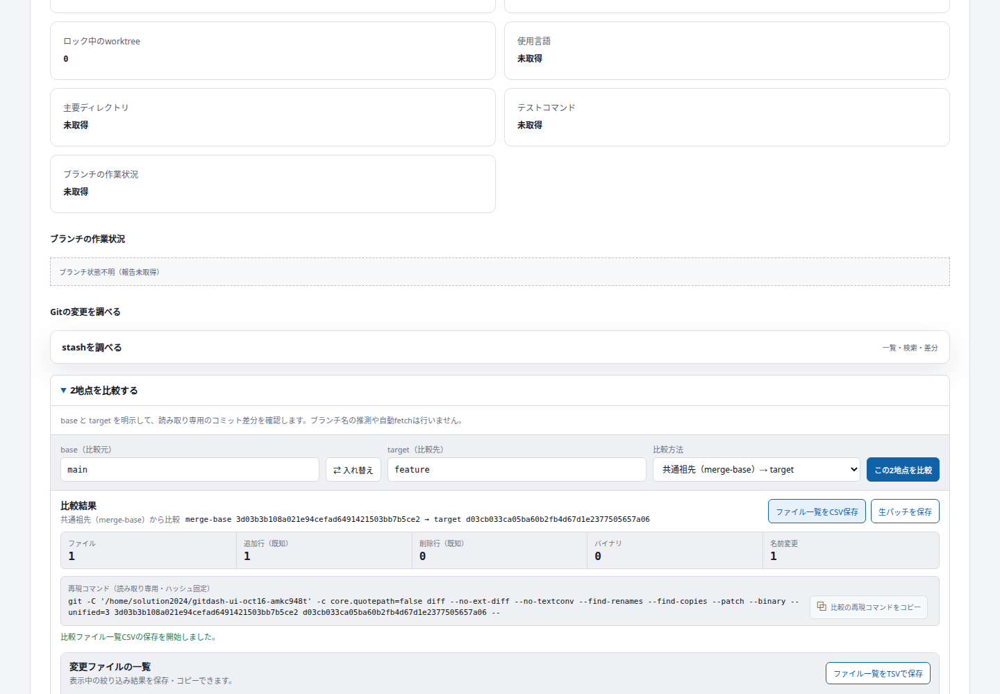
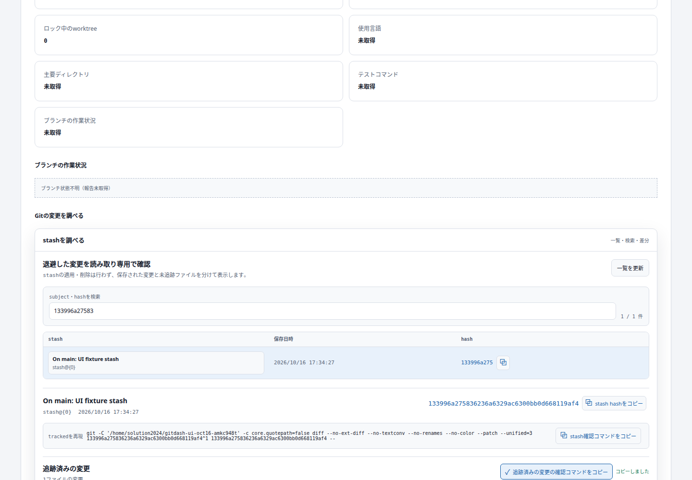

プロジェクト情報に、stash・2地点比較・ファイル履歴の調査画面を追加しました。すべて読み取り専用です。
開始30点＋機能追加14件×5点＝100点。過去の機能の再利用や実装中の修正を重複加点していません。点数は指定の加点基準によります。
| Area | New user capability | Classification | Points |
| Stash | Browse saved changes by date, subject and immutable hash | Feature | 5 |
| Stash | Inspect tracked and untracked contents separately, including file counts and patch | Feature | 5 |
| Stash | Find a saved change by subject or hash | Feature | 5 |
| Stash | Copy a repository-specific immutable read-only inspection command | Feature | 5 |
| Comparison | Compare two explicit commits or refs with file statistics and patch | Feature | 5 |
| Comparison | Reverse the comparison direction without re-entering refs | Feature | 5 |
| Comparison | Compare target against the unique common ancestor | Feature | 5 |
| Comparison | Copy the exact resolved-hash comparison command with quoted repository path | Feature | 5 |
| Comparison | Save comparison file inventory as formula-safe CSV | Feature | 5 |
| Comparison | Download raw patch for offline review, explicitly marked partial if truncated | Feature | 5 |
| File history | Inspect commits affecting an explicit relative path at an explicit revision | Feature | 5 |
| File history | Follow detected renames across previous paths | Feature | 5 |
| File history | Filter retrieved history by exact author | Feature | 5 |
| File history | Export matching retrieved history as CSV | Feature | 5 |
検証: frontend 169件・backend 187件成功、本番ビルド成功、レビューP1解消済み。実Gitの名前変更履歴221件をページングして欠落がないことを確認。GUIでコピー・ダウンロード内容、比較方向、共通祖先、PC・モバイル、ライト・ダーク表示を確認しました。
指定Composeで反映しFrontend/Backend稼働、health正常。アプリを開く / 詳細な検証記録と制限


パッチは上限超過時に部分表示を明示。ファイル履歴は取得範囲と上限を表示します。stashの適用・削除操作は追加していません。